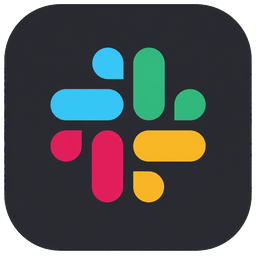
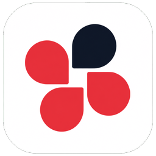

複数のメッセージアプリを1つに
Messenger・LINE・LinkedIn・Gmail が同じ一覧に並びます。アプリを行き来せず、上から順に片づけるだけ。

Messenger・LINE・LinkedIn・Gmail を1つの受信箱に。読んでも相手に既読は付かず、返信はあなたの言い回しを学んだ下書きを承認するだけ。
macOS 版（Apple Silicon）
Sendy をダウンロードMessenger の暗号化されたチャットは、会話ごとに1回だけ取り込み操作が必要です。画面上部の 相手の名前 を押してチャット設定を開き、「過去の履歴を復元」 を押してください。

「返信が遅れる」を、仕組みで無くすための道具です。
Messenger・LINE・LinkedIn・Gmail が同じ一覧に並びます。アプリを行き来せず、上から順に片づけるだけ。
開いただけでは相手に既読を送りません。返信を送った時にはじめて既読が付くので、「読んだのに返せていない」気まずさが消えます。設定で切り替えも可能。
過去のやり取りから相手ごとの文脈と、あなたの文体を学びます。ミラーリング・簡潔・丁寧・日程調整から狙いを選び、承認して送るだけ。
深夜に書いて朝に届ける予約送信と、返し忘れを防ぐリマインダー。予約は一覧からその場で時刻も文面も直せます。
⌘K で会話へ一足飛び、⌘数字でサービス切替。macOS らしい半透明の質感と、目が疲れない黒を基調にしています。
動作確認が取れたものから順に開放しています。
 LINE
LINE LinkedIn
LinkedIn Outlook
Outlook Instagram
Instagram
Slack
Chatwork WhatsApp
WhatsApp開発元（Stock Value）は、あなたのログイン情報もメッセージ本文も受け取れません。受け取る仕組み自体がありません。
各サービスのログイン情報は、macOS の安全な保管領域（Keychain / safeStorage）で暗号化し、この Mac の中だけに保存します。外部へ送る通信経路を実装していません。
受信したメッセージ・添付・連絡先は、あなたの Mac のアプリ用フォルダに保存されます。開発元のサーバーへのアップロードはありません。
返信案を作る操作をした時に限り、その会話の内容が AI（Google Gemini）へ送られます。モデルの学習には使われない条件で呼び出しています。AI 機能を使わなければ何も送られません。
アプリ内の記録は「いつ・どこで失敗したか」だけです。会話の中身やログイン情報は含めません。共有するかどうかもあなたが決めます。
macOS 版（Apple Silicon）
Messenger の暗号化されたチャットは、会話ごとに1回だけ取り込み操作が必要です。 画面上部の 相手の名前 を押してチャット設定を開き、「過去の履歴を復元」 を押してください。